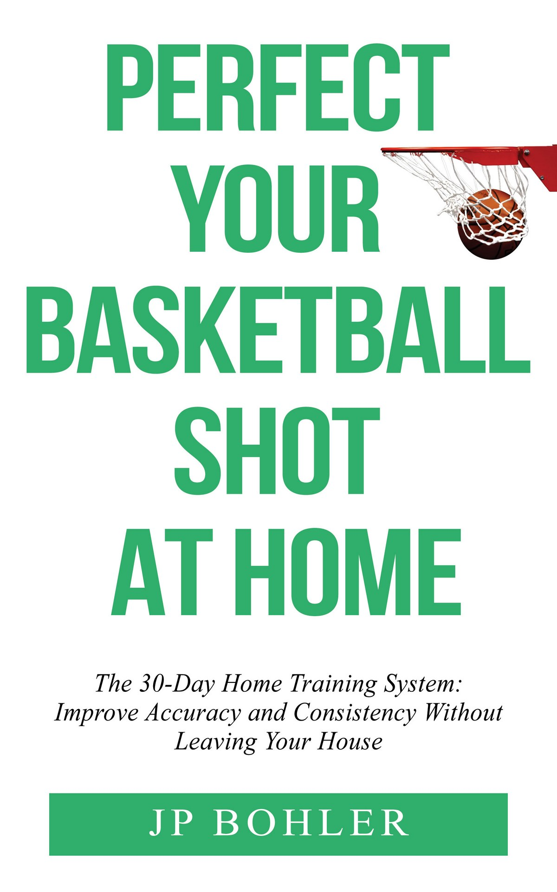

The book · By JP Bohler
Perfect Your Basketball Shot At Home
The 30-Day Home Training System: Improve Accuracy and Consistency Without Leaving Your House

For recreational players who want a structured approach to home practice, even without regular access to a full-size basketball court.
Kindle editionPaperback editionWhat is inside?
- A personal shooting journey: practical lessons from working on a shot over time.
- Baseline measurement: establish a starting point and track changes.
- Shooting technique: work on accuracy and consistency with a focus on aiming straight.
- Home practice: explore techniques and equipment suited to a home setting.
- Mental focus: stay relaxed and attentive during practice.
- Progress tracking: review your sessions and keep your practice purposeful.
Is this book for you?
It is written for recreational basketball players who want to make home practice more deliberate. You can study mechanics and build habits in a small space, while measuring actual shooting accuracy requires a suitable basket and safe practice area.
The 30-day structure is a training format, not a guarantee of a particular improvement or shooting percentage.
Book details
| Author | JP Bohler |
|---|---|
| Title | Perfect Your Basketball Shot At Home |
| Subtitle | The 30-Day Home Training System: Improve Accuracy and Consistency Without Leaving Your House |
| Language | English |
| Paperback | 82 pages · ISBN 9798333752048 · Published July 27, 2024 |
| Kindle ASIN | B0D9TZ57CW |
For availability and current prices, use the retailer listings below. Formats can have different identifiers and publication dates.
Questions before you buy
Do I need a full-size court?
The book focuses on home practice with minimal equipment. Choose a safe setup appropriate to the space and the exercise; access to a suitable basket helps you measure shooting accuracy.
Is it a team-coaching manual?
The focus is an individual recreational player's shooting practice and progress.
Is there a free practice log?
Yes. The blank 30-session practice log lets you record attempts and makes alongside your reading.